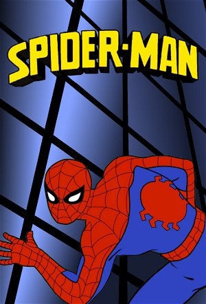

Spider-Man (1981) (1981)
Science FictionFantasyFamilyChildrenAnimationAdventureAction
| Year | 1981 |
|---|---|
| Rating | TV-Y7 |
| Status | Completed |
| Seasons | 1 |
| Episodes | 26 |
| Genre | Science Fiction, Fantasy, Family, Children, Animation, Adventure, Action |
Peter Parker battles crime in New York City as Spider-Man while balancing being a university student, working as a photographer for The Daily Bugle.
Episodes
Season 1
University student Peter Parker struggles with double duty—balancing crime-fighting, schoolwork, and photographing for the Daily Bugle. Across 26 action-packed episodes, he faces classic foes like Kraven the Hunter in a battle over a Savage Land tiger, the Gadgeteer shrinks him down in size, and Professor Gizmo enlists his help for underwater treasure hunts. Loyalty, responsibility, and heroism reign supreme.
| # | Title | Air Date | Synopsis |
|---|---|---|---|
| 1 | Bubble, Bubble, Oil and Trouble | 1981-09-12 | Doctor Octopus commits various mysterious crimes in an effort to upgrade his mechanical arms and steal the world's oil supply. |
| 2 | Dr. Doom, Master of the World | 1981-09-19 | Doctor Doom is mind-controlling world leaders so, at the upcoming United Nations meeting, they will declare him the master of the world. |
| 3 | Lizards, Lizards, Everywhere | 1981-09-26 | The Lizard is plotting to turn New York City into a swampland, filled with reptiles under his control. |
| 4 | Curiosity Killed the Spider-Man | 1981-10-03 | The Black Cat announces that she plans to steal the Maltese Mouse and challenges Spider-Man to try to stop her. |
| 5 | The Sandman is Coming | 1981-10-10 | The Sandman steals a soil sample from Mars from NASA and goes on a crime spree. |
| 6 | When Magneto Speaks...People Listen | 1981-10-17 | Magneto uses a spacecraft to increase his powers and shut off the nation's power supply. |
| 7 | The Pied Piper of New York Town | 1981-10-24 | Mysterio opens up a new disco nightclub in town that turns its patrons and anyone else that hears the disco music into his slaves, whom he uses to try to steal a nuclear missile. |
| 8 | The Doctor Prescribes Doom | 1981-10-31 | Doctor Doom returns to replace the world leaders with robots under his control so they will declare him ruler of the world. |
| 9 | Carnival of Crime | 1981-11-07 | The circus has come to town, and the Ringmaster uses a special gas to rob banks, while making people believe that Spider-Man is the thief. |
| 10 | Revenge of the Green Goblin | 1981-11-14 | Norman Osborn escapes from a mental institution on Halloween night, but when the train he is riding in crashes and blows up, he remembers that he is the Green Goblin and threatens to reveal to the world who Spider-Man re |
| 11 | Triangle of Evil | 1981-11-21 | The Triangle of Evil led by Stuntman forces Spider-Man to survive deadly stunts. |
| 12 | The A-B-C's of D-O-O-M | 1981-11-28 | Doctor Doom forms a criminal partnership with Goron to pose as humanitarians to gain control of a space craft. |
| 13 | The Sidewinder Strikes! | 1981-12-05 | A rodeo show has come to the city, and the Sidewinder tries to steal the gold spurs. |
| 14 | The Hunter and the Hunted | 1981-12-12 | After being hired by J. Jonah Jameson to look for a mascot for the Daily Bugle, Kraven the Hunter comes to the city as a hero when he captures Zabu, the last surviving sabre-tooth tiger. Ka-Zar comes to the city to liber |
| 15 | The Incredible Shrinking Spider-Man | 1981-12-19 | A janitor, feeling that his genius is ignored, dons the identity of the Gadgeteer to steal his employer's new device that can shrink anything and uses it to shrink Spider-Man. |
| 16 | The Unfathomable Professor Gizmo | 1981-12-26 | Professor Gizmo seeks to reclaim sunken treasure and requires Spider-Man's help to do so. |
| 17 | Cannon of Doom | 1982-01-02 | Doctor Doom secretly uses a laser cannon to create a fault line on New York City and then promises to fix the problem, when in fact he plans to use his laser cannon to create more earthquakes. |
| 18 | The Capture of Captain America | 1982-01-09 | Captain America is kidnapped by the Red Skull, who plans to swap minds with him and take over the military. Spider-Man tries to save Captain America. |
| 19 | The Doom Report | 1982-01-16 | Freedom fighters from Latveria start an underground movement in New York City, while Doctor Doom orders the United Nations to make him ruler of the world or else he will use his weather control device to cause chaos. |
| 20 | The Web of Nephilia | 1982-01-23 | A mad scientist named Dr. Bradley Shaw transforms into a mutant spider when trying to gain Spider-Man's powers from his blood sample. |
| 21 | Countdown to Doom | 1982-01-30 | NASA sends a rocket into space, built by Doctor Doom, unaware that he has attached a device to it that will move the Earth out of orbit, sending it into a new ice age, in an effort to force the United Nations to declare |
| 22 | Arsenic and Aunt May | 1982-02-06 | Spider-Man catches the relative of the burglar that killed Ben Parker, which leads the Chameleon to discover Spidey's secret identity. He poses as Uncle Ben's spirit and tricks Aunt May into seeing a medium that will giv |
| 23 | The Vulture Has Landed | 1982-02-13 | The Vulture has been kidnapping scientists in an effort to gain control of a NASA space probe. Peter goes to see his friend Harry in his apartment, but he's not home. Vulture mistakes Peter as Harry and kidnaps him. |
| 24 | Wrath of the Sub-Mariner | 1982-02-20 | Upon calling a truce with crime lords Silvermane, Hammerhead and Caesar Cicero, the Kingpin shows them a powerful acid developed by Dr. Everett to unite the crime lords in a plot to pull off crimes. The subsequent chemic |
| 25 | The Return of Kingpin | 1982-02-27 | The Kingpin is able to trick Spider-Man into committing a series of crimes. |
| 26 | Under the Wizard's Spell | 1982-03-06 | The Wizard invites Medusa to New York City, where he forces her to steal an electronic device from a military base. |